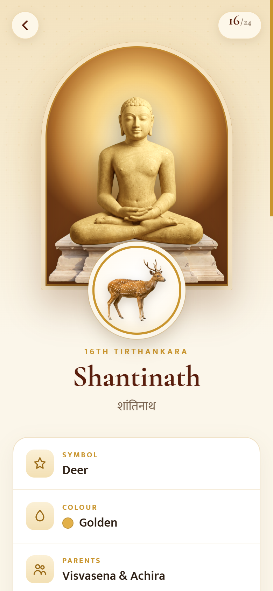
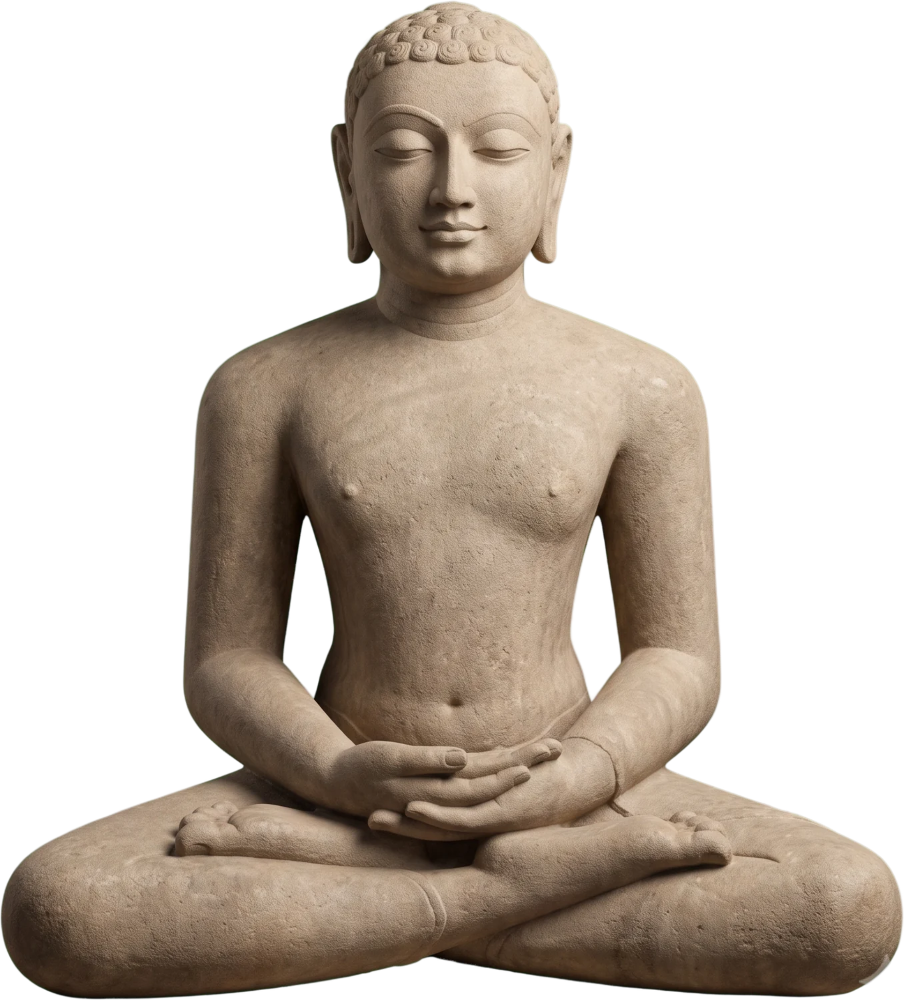
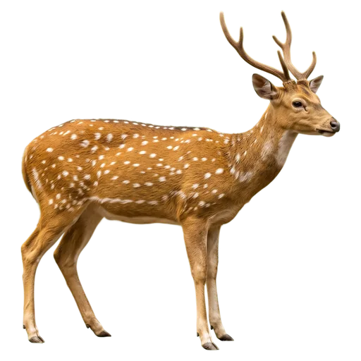

Style board · for review before any change
Colours taken from Jain manuscript painting, one typeface family for English and Hindi, three corner sizes, an 8-point spacing grid, and a few hand-made details. Nothing below is in the app yet.
Flat colours instead of gradients. Gold stops being a fill (no gold buttons, no gold text). One accent colour, sindoor red, marks everything you can tap or what is selected.
Shanti means “peace”. Shantinath was born in Hastinapur, and Jain tradition holds that he was also a chakravarti before renouncing the world. — Mukta, 18 px body
The heading face covers both English and Hindi from one design, so the two scripts finally match. Labels use sentence case instead of spaced capitals, and nothing is smaller than 14 px.
Every gap and padding comes from this scale. Cards: 24 px padding (16 px on phones). Sections: 48 px apart.
Squared-off segments, solid sindoor for the active one. No glow, no glass.
A plain ruler on a line, sindoor bead. Details button takes the arch shape.



16th Tirthankara
The niche becomes lapis with a thin gold line, like a painted shrine. The symbol seal gets a sindoor ring. Facts become a simple ruled list, the way a museum label is set, instead of boxed tiles with icons.
Manuscript border, drawn by hand in SVG: sindoor band, gold rules, lotus buds. Used only at the top of the detail page and as a section divider. Cards also carry a faint paper grain, as on this board.
Plus a small credit line at the end of each detail page — “Content reviewed by …” with the museum’s name — as any real institution would print on its labels.